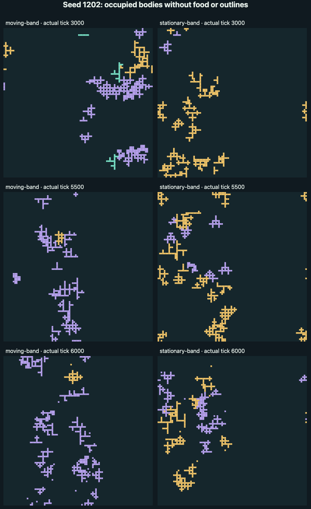
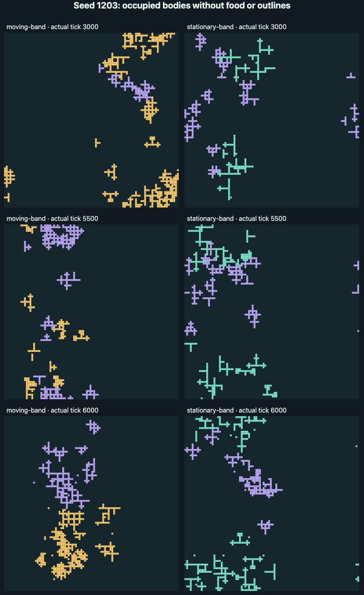

Moving versus stationary food bands · seeds 1202 and 1203 · horizon 6,000
Both worlds keep changing through 6,000 ticks.
Each selected seed replays a moving-band world beside its stationary-band counterpart through tick 6,000 or actual extinction. Every pair reproduces its own accepted 0–3,000 history exactly; only ticks 3,001–6,000 are new for that seed.
Recorded states only. The replay opens paused and visits saved frames every 20 ticks, plus a true off-cadence terminal frame when needed. No model is run or continued here. A moving stripe marks where new food is offered; food already deposited remains after the stripe moves. Equal offered food does not mean equal accepted food. The parent knows both seeds’ numerical outcomes and historical media are available, so visual review is not blind.
Selected-seed screen
Seed 1202 food-band longevity replication
The selected seed’s decision appears only after both recordings, frozen source identities, and its SHA-bound visual receipt verify. Pending is not a pass.
Checking only the selected seed’s pair…
Selected seed · two band positions
Seed 1202 · paired world states
Paused · recorded replay
Pair decision
Move through both recordings
The shared timeline visits recorded ticks through 6,000 plus actual terminal ticks. The worlds stay on saved frames; they never run the model.
Use arrow keys to move one saved tick. Space toggles playback when focus is outside a control.
Hidden tabs pause and stay paused when you return.
Moving band
48 columns · shifts every 50 ticks- Family 1
- Family 2
- Family 3
- Food remaining
- Actual tick
- —
- Living bodies
- —
- Occupied cells
- —
- Families
- —
- Food offered
- —
- Food accepted
- —
- Food overflow
- —
- Food remaining
- —
- Band starts at column
- —
Stationary band
48 columns · fixed at 0- Family 1
- Family 2
- Family 3
- Food remaining
- Replenishment band · 48 columns
- Actual tick
- —
- Living bodies
- —
- Occupied cells
- —
- Families
- —
- Food offered
- —
- Food accepted
- —
- Food overflow
- —
- Food remaining
- —
- Band starts at column
- —
Three late 500-tick windows
Turnover and food accounting
Food offered per pulse is the same; totals stop at each arm’s actual terminal tick. Acceptance and overflow may differ. Band occupancy is descriptive, not a fitness score.
| Arm · window | Births · deaths | Population min–max · end | Cap 48 | Near-cap 47+ | Blocked attempts | Food offered · accepted · overflow | Families · end | Programs · end | Living max generation | Max-ever generation | Occupied band cells · share |
|---|---|---|---|---|---|---|---|---|---|---|---|
| Waiting for the selected-seed arm records. | |||||||||||
A window with no executed ticks is unavailable. Comparisons at 3,000, 5,500 and 6,000 are descriptive; extinction never invents later states.
Paired replay not yet available
No seed 1202 pair is published yet.
The viewer checks only the selected seed’s pair index and the two arm files explicitly listed there.
Paired replay could not be loaded
The listed evidence is unavailable or malformed.
No replay frame or comparison decision was shown. Check the source links and paired record.
Two new seeds, four active worlds
Both designs passed on seeds 1202 and 1203: two both-pass pairs, zero moving-only, stationary-only or neither. Each mode passed 2 of 2 valid pairs. Historical seed 1201 is separate and was not rerun. Only ticks 3,001–6,000 are new; every earlier prefix matches its accepted recording exactly.
The striking rebound is stationary seed 1202: its lilac family grew from 2 bodies at 3,000 to 22 at 6,000. Moving seed 1202 ended with only 3 gold bodies beside 41 lilac bodies. This screen finds ongoing variety in both environments; it does not establish a motion advantage, equality or adaptation.
| Seed / food | Bodies at 6,000 | Mint / gold / lilac | Programs |
|---|---|---|---|
| 1202 moving | 44 | 0 / 3 / 41 | 15 |
| 1202 stationary | 45 | 0 / 23 / 22 | 17 |
| 1203 moving | 48 | 0 / 28 / 20 | 18 |
| 1203 stationary | 48 | 30 / 0 / 18 | 17 |
All four worlds had births and deaths in each late 500-tick window and changed their occupied arrangements from 5,500 to 6,000. Ending at 48 bodies does not mean freezing: seed 1203 spent only 4 moving / 12 stationary ticks at the ceiling during the last 500 ticks. Family survival remains fragile.
Full interpretation and next proposal · Saved summary · Validation
Watch both recorded histories
Silent paired animations: 301 saved states, one every 20 ticks, played at 10 frames per second. Each clip is 30.1 seconds. These are recordings, not new runs.
Late in the recording, moving bodies split into separated groups; stationary bodies reorganize and a lower-left cluster appears. Its lilac family rebounds from 2 to 22 bodies. No audio.
The moving upper cluster clears as broad middle and lower branches develop. Stationary groups disperse above and reorganize in the middle and lower world. No audio.
Body arrangements without food or band outlines

